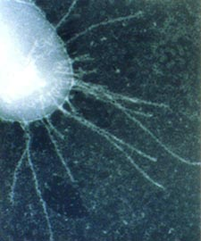

-
Agrobacterium Tumefaciens
The disease gains its name from the large tumour-like
swellings (galls) that typically occur at the crown of the plant,
just above soil level. Although it reduces the marketability
of nursery stock, it usually does not cause serious damage to older plants. -
Xanthomonas Campestris
Xanthomonas campestris is an aerobic, Gram-negative rod
known to cause the black rot in crucifers by darkening the vascular tissues.
Campestris have been identified by their distinctive pathogenicity on
a wide range of plants including crops and wild plants. -

Xylella Fastidiosa
A pathogenic bacterium that infects plants,
causing a variety of diseases in over 100 plant
species, including grapevine, citrus, almonds,
coffee, and many other species of economic importance. -

Ralstonia solanacearum
In a taxonomic study of certain non-fluorescent species
of the genus Pseudomonas, ), the genus Burkholderia was proposed
to encompass the variation found in this group and the
name Burkholderia solanacearum was proposed. -

Pseudomonas Syringae
A rod shaped Gram-negative bacteria, with an aerobic metabolism, and
polar flagella. It is a plant pathogen that can be
characterized by its inability to properly utilize arginine,
because it lacks the assistance of the arginine dihydrolase system.
Back